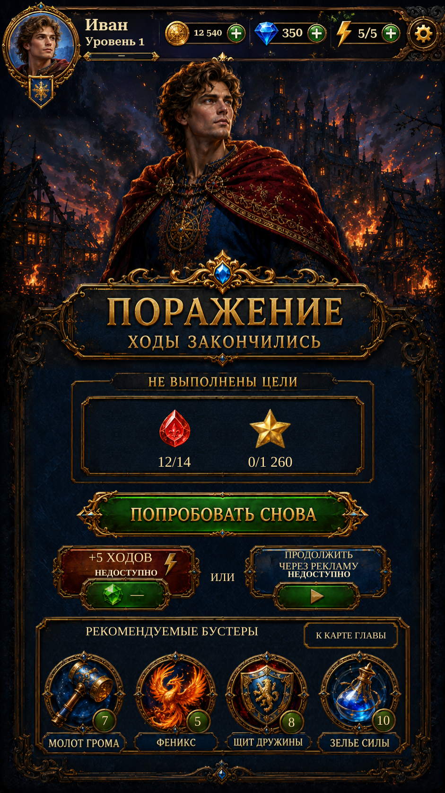

Failure · reference rebuild R1Failure · reference rebuild R1
The shared Home player header now supplies the portrait, resource balances, settings and navigation. Original Ivan artwork, outer panel carving, visible scenery and Russian goal-heading lettering restore the reference composition.
Native views are actual Unity captures using isolated test saves. Counts, goals and resources are live. Paid +5 moves and ad continuation remain visibly unavailable until the scheduled feature phase.
